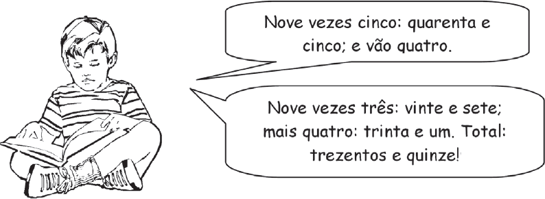

Observe a ilustração abaixo.

A fala do menino permite os comentários a seguir.
-
I - Quando o menino diz “e vão quatro”, utiliza-se de um mecanismo
que não reflete o valor posicional do algarismo,
realizando a operação de forma mecânica.
-
Expressões como “e vão quatro” ou “desce um” estão
relacionadas à “troca” que ocorre na base 10, no sistema
de numeração decimal, no entendimento de sua estrutura
lógico-matemática.
-
O ensino de regras destituídas de significados pode estar
na origem das dificuldades apresentadas por crianças, ao
tentarem utilizar os algoritmos na resolução de problemas.
-
A compreensão do valor posicional de um algarismo é
favorecida quando a criança opera com materiais concretos
em que pode agrupar elementos de dez em dez ou de
cem em cem, por exemplo.
São corretos os comentários
-
I e II, apenas.
-
I e III, apenas.
-
II e III, apenas.
-
II, III e IV, apenas.
-
I, II, III e IV.